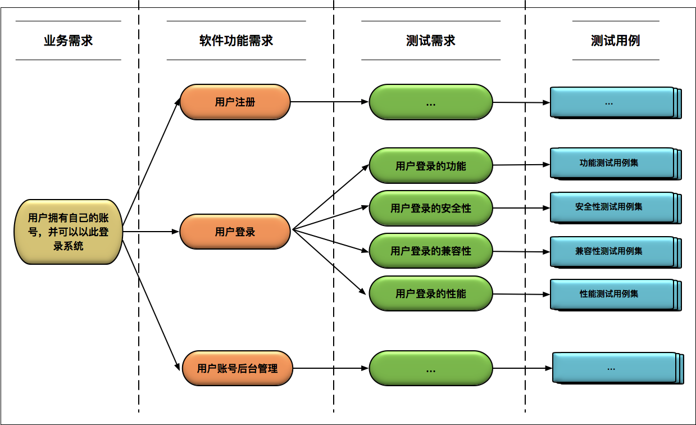

- 00 开篇词 从“小工”到“专家”，我的软件测试修炼之道.md.html
- 01 你真的懂测试吗？从“用户登录”测试谈起.md.html
- 02 如何设计一个“好的”测试用例？.md.html
- 03 什么是单元测试？如何做好单元测试？.md.html
- 04 为什么要做自动化测试？什么样的项目适合做自动化测试？.md.html
- 05 你知道软件开发各阶段都有哪些自动化测试技术吗？.md.html
- 06 你真的懂测试覆盖率吗？.md.html
- 07 如何高效填写软件缺陷报告？.md.html
- 08 以终为始，如何才能做好测试计划？.md.html
- 09 软件测试工程师的核心竞争力是什么？.md.html
- 10 软件测试工程师需要掌握的非测试知识有哪些？.md.html
- 11 互联网产品的测试策略应该如何设计？.md.html
- 12 从0到1：你的第一个GUI自动化测试.md.html
- 13 效率为王：脚本与数据的解耦 + Page Object模型.md.html
- 14 更接近业务的抽象：让自动化测试脚本更好地描述业务.md.html
- 15 过不了的坎：聊聊GUI自动化过程中的测试数据.md.html
- 16 脑洞大开：GUI测试还能这么玩（Page Code Gen + Data Gen + Headless）？.md.html
- 17 精益求精：聊聊提高GUI测试稳定性的关键技术.md.html
- 18 眼前一亮：带你玩转GUI自动化的测试报告.md.html
- 19 真实的战场：如何在大型项目中设计GUI自动化测试策略.md.html
- 20 与时俱进：浅谈移动应用测试方法与思路.md.html
- 21 移动测试神器：带你玩转Appium.md.html
- 22 从0到1：API测试怎么做？常用API测试工具简介.md.html
- 23 知其然知其所以然：聊聊API自动化测试框架的前世今生.md.html
- 24 紧跟时代步伐：微服务模式下API测试要怎么做？.md.html
- 25 不破不立：掌握代码级测试的基本理念与方法.md.html
- 26 深入浅出之静态测试方法.md.html
- 27 深入浅出之动态测试方法.md.html
- 28 带你一起解读不同视角的软件性能与性能指标.md.html
- 29 聊聊性能测试的基本方法与应用领域.md.html
- 30 工欲善其事必先利其器：后端性能测试工具原理与行业常用工具简介.md.html
- 31 工欲善其事必先利其器：前端性能测试工具原理与行业常用工具简介.md.html
- 32 无实例无真相：基于LoadRunner实现企业级服务器端性能测试的实践（上）.md.html
- 33 无实例无真相：基于LoadRunner实现企业级服务器端性能测试的实践（下）.md.html
- 34 站在巨人的肩膀：企业级实际性能测试案例与经验分享.md.html
- 35 如何准备测试数据？.md.html
- 36 浅谈测试数据的痛点.md.html
- 37 测试数据的“银弹”- 统一测试数据平台（上）.md.html
- 38 测试数据的“银弹”- 统一测试数据平台（下）.md.html
- 39 从小作坊到工厂：什么是Selenium Grid？如何搭建Selenium Grid？.md.html
- 40 从小工到专家：聊聊测试执行环境的架构设计（上）.md.html
- 41 从小工到专家：聊聊测试执行环境的架构设计（下）.md.html
- 42 实战：大型全球化电商的测试基础架构设计.md.html
- 43 发挥人的潜能：探索式测试.md.html
- 44 测试先行：测试驱动开发(TDD).md.html
- 45 打蛇打七寸：精准测试.md.html
- 46 安全第一：渗透测试.md.html
- 47 用机器设计测试用例：基于模型的测试.md.html
- 48 优秀的测试工程师为什么要懂大型网站的架构设计？.md.html
- 49 深入浅出网站高性能架构设计.md.html
- 50 深入浅出网站高可用架构设计.md.html
- 51 深入浅出网站伸缩性架构设计.md.html
- 52 深入浅出网站可扩展性架构设计.md.html
- 测试专栏特别放送 浅谈全链路压测.md.html
- 测试专栏特别放送 答疑解惑第一期.md.html
- 测试专栏特别放送 答疑解惑第七期.md.html
- 测试专栏特别放送 答疑解惑第三期.md.html
- 测试专栏特别放送 答疑解惑第二期.md.html
- 测试专栏特别放送 答疑解惑第五期.md.html
- 测试专栏特别放送 答疑解惑第六期.md.html
- 测试专栏特别放送 答疑解惑第四期.md.html
- 结束语 不是结束，而是开始.md.html
- 捐赠
02 如何设计一个“好的”测试用例？
在上一篇文章中，我以“用户登录”这一简单直接的功能作为测试对象，为你介绍了如何设计测试用例。现在你应该已经知道，为了保证软件系统的质量，测试用例的设计不仅需要考虑功能性需求，还要考虑大量的非功能性需求。
那么，今天我会重点和你探讨如何才能设计出一个“好的”测试用例。
什么才算是“好的”测试用例？
在正式开始讨论之前，我先跟你聊聊，什么才是“好的”测试用例，这个“好”又应该体现在哪些方面。这是一个看似简单实则难以回答的问题，即使深入思考后，也很难有非常标准的答案。
通常，你的第一反应很可能会是“发现了软件缺陷的测试用例就是好的用例”，我可能会反问你“如果说测试用例发现了缺陷就是好用例，那么在该缺陷被修复后，同样的用例难道就不是好用例了吗？”。
你可能还会说“发现软件缺陷可能性大的测试用例就是好用例”，这话看起来还是蛮有道理的，但是我同样会反问你“你打算用什么方法来量化测试用例发现缺陷的可能性？”。
类似地，你可能还会说“发现至今未被发现的软件缺陷的测试用例就是好用例”，那么我想问你的是：如何评估是否还存在未被发现的缺陷？如果软件中根本就没有错误了呢？
其实，是你定义“好的”测试用例的思路错了，这就有点像“傻子吃烧饼”，连吃五个不饱，吃完第六个终于饱了，于是他说：早知道吃了第六个就会饱，何必吃前面五个呢。细想，他吃的六个烧饼其实是一个整体，一起吃下去才会饱，而你无法找到吃一个就能饱的“好”烧饼。
对于测试用例其实也是同样的道理，“好的”测试用例一定是一个完备的集合，它能够覆盖所有等价类以及各种边界值，而跟能否发现缺陷无关。
我举一个“池塘捕鱼”的例子，可以帮你更好地理解什么是“好的”测试用例。
如果把被测试软件看作一个池塘，软件缺陷是池塘中的鱼，建立测试用例集的过程就像是在编织一张捕渔网。“好的”测试用例集就是一张能够覆盖整个池塘的大渔网，只要池塘里有鱼，这个大渔网就一定能把鱼给捞上来。
如果渔网本身是完整的且合格的，那么捞不到鱼，就证明池塘中没有鱼，而渔网的好坏与池塘中是否有鱼无关。
“好的”测试用例必须具备哪些特征？
一个“好的”测试用例，必须具备以下三个特征。
整体完备性： “好的”测试用例一定是一个完备的整体，是有效测试用例组成的集合，能够完全覆盖测试需求。
等价类划分的准确性： 指的是对于每个等价类都能保证只要其中一个输入测试通过，其他输入也一定测试通过。
等价类集合的完备性： 需要保证所有可能的边界值和边界条件都已经正确识别。
做到了以上三点，就可以肯定测试是充分且完备的，即做到了完整的测试需求覆盖。
三种最常用的测试用例设计方法
明白了“好的”测试用例的内涵和外延后，我再回过头来给你讲讲，为了能够设计出“好的”测试用例，你通常都要使用哪些设计方法。
从理论层面来讲，设计用例的方法有很多，如果你去翻阅测试图书或网络教程，会发现一堆让人眼花缭乱的测试方法，比如等价类划分法、边界值分析法、错误推测方法、因果图方法、判定表驱动分析法、正交实验设计方法、功能图分析方法、场景设计方法、形式化方法、扩展有限状态机方法等等，但是从软件企业实际的工程实践来讲，真正具有实用价值并且常用的只有前三种方法。
当然，对于那些与人的生命安全直接或间接相关的软件，比如飞行控制、轨道交通的列车控制、医疗检测相关的软件或者系统，由于需要达到几近变态的测试覆盖率要求，会采用更多的测试设计方法。但对大多数的软件测试而言，综合使用等价类划分、边界值分析和错误推测这三大类方法就足够了。
接下来，我会结合实际的例子，给你解释一下这三类方法的核心概念以及在使用时需要注意的问题。
第一，等价类划分方法
从上一篇文章中你已经知道了，等价类中任意一个输入数据对于揭露程序中潜在错误都具有同等效果。后续我们只要从每个等价类中任意选取一个值进行测试，就可以用少量具有代表性的测试输入取得较好的测试覆盖结果。
现在，我给你看一个具体的例子：学生信息系统中有一个“考试成绩”的输入项，成绩的取值范围是0~100之间的整数，考试成绩及格的分数线是60。
为了测试这个输入项，显然不可能用0~100的每一个数去测试。通过需求描述可以知道，输入0~59之间的任意整数，以及输入60~100之间的任意整数，去验证和揭露输入框的潜在缺陷可以看做是等价的。
那么这就可以在0~59和60~100之间各随机抽取一个整数来进行验证。这样的设计就构成了所谓的“有效等价类”。
你不要觉得进行到这里，已经完成了等价类划分的工作，因为等价类划分方法的另一个关键点是要找出所有“无效等价类”。显然，如果输入的成绩是负数，或者是大于100的数等都构成了“无效等价类”。
在考虑了无效等价类后，最终设计的测试用例为：
- 有效等价类1：0~59之间的任意整数；
- 有效等价类2：59~100之间的任意整数；
- 无效等价类1：小于0的负数；
- 无效等价类2：大于100的整数；
- 无效等价类3：0~100之间的任何浮点数；
- 无效等价类4：其他任意非数字字符。
第二，边界值分析方法
边界值分析是对等价类划分的补充，你从工程实践经验中可以发现，大量的错误发生在输入输出的边界值上，所以需要对边界值进行重点测试，通常选取正好等于、刚刚大于或刚刚小于边界的值作为测试数据。
我们继续看学生信息系统中“考试成绩”的例子，选取的边界值数据应该包括：-1，0，1，59，60，61，99，100，101。
第三，错误推测方法
错误推测方法是指基于对被测试软件系统设计的理解、过往经验以及个人直觉，推测出软件可能存在的缺陷，从而有针对性地设计测试用例的方法。这个方法强调的是对被测试软件的需求理解以及设计实现的细节把握，当然还有个人的能力。
错误推测法和目前非常流行的“探索式测试方法”的基本思想和理念是不谋而合的，这类方法在目前的敏捷开发模式下的投入产出比很高，因此被广泛应用。但是，这个方法的缺点也显而易见，那就是难以系统化，并且过度依赖个人能力。
比如，Web界面的GUI功能测试，需要考虑浏览器在有缓存和没有缓存下的表现；Web Service的API测试，需要考虑被测API所依赖的第三方API出错下的处理逻辑；对于代码级的单元测试，需要考虑被测函数的输入参数为空情况下的内部处理逻辑等等。由此可见，这些测试用例的设计都是基于曾经遇到的问题而进行的错误推测，很大程度上取决于个人能力。
在软件企业的具体实践中，为了降低对个人能力的依赖，通常会建立常见缺陷知识库，在测试设计的过程中，会使用缺陷知识库作为检查点列表（checklist），去帮助优化补充测试用例的设计。
对于中小企业，可能最初的方法就是建立一个简单的wiki页面，让测试工程师完成测试用例的最初设计后对应这个wiki页面先做一轮自检，如果在后续测试中发现了新的点，就会继续完善这个wiki页面。
对于测试基础架构比较成熟的中大型软件企业，通常会以该缺陷知识库作为数据驱动测试的输入来自动生成部分的测试数据，这部分内容我会在后面的文章中详细介绍。
如何才能设计出“好的”测试用例？
掌握了最基本的三种设计测试用例的方法，你就相当于拿到了打仗所需要的枪支弹药，接下来就是如何在实战中用这些武器打个大胜仗了。
在真实的工程实践中，不同的软件项目在研发生命周期的各个阶段都会有不同的测试类型。 比如，传统软件的开发阶段通常会有单元测试，软件模块集成阶段会有代码级集成测试，打包部署后会有面向终端用户的GUI测试；再比如，电商网站的测试会分为服务器端基于API的测试、中间件测试、前端GUI测试等。
对于每一种不同的测试类型，设计出“好的”测试用例的关注点和方法论可能会有很大的差异， 有些可能采用黑盒方法，有些可能采用白盒方法，有些还会采用灰盒方法（比如，微服务架构中的测试），所以很难有一套放之四海而皆准的套路。
所以，在这篇文章中，我仅以最常见、最容易理解的面向终端用户的GUI测试为例，跟你聊聊如何才能设计一个“好的”测试用例。
面向终端用户的GUI测试，最核心的测试点就是验证软件对需求的满足程度，这就要求测试工程师对被测软件的需求有深入的理解。在我看来，深入理解被测软件需求的最好方法是，测试工程师在需求分析和设计阶段就开始介入，因为这个阶段是理解和掌握软件的原始业务需求的最好时机。
只有真正理解了原始业务需求之后，才有可能从业务需求的角度去设计针对性明确、从终端用户使用场景考虑的端到端（End-2-End）的测试用例集。这个阶段的测试用例设计，主要目的是验证各个业务需求是否被满足，主要采用基于黑盒的测试设计方法。
在具体的用例设计时，首先需要搞清楚每一个业务需求所对应的多个软件功能需求点，然后分析出每个软件功能需求点对应的多个测试需求点，最后再针对每个测试需求点设计测试用例。
这个用例设计过程，你可能觉得有点绕，但是没关系，我以“用户登录”功能的测试用例设计为例，画了一张图来帮你理清这些概念之间的映射关系。
图中的业务需求到软件功能需求、软件功能需求到测试需求，以及测试需求到测试用例的映射关系，在非互联网软件企业的实践中，通常会使用需求追踪管理工具（比如ALM、DOORS、JIRA、TestLink等）来管理，并以此来衡量测试用例对业务需求、软件功能需求的覆盖率。

具体到测试用例本身的设计，有两个关键点需要你注意。
从软件功能需求出发，全面地、无遗漏地识别出测试需求是至关重要的，这将直接关系到用例的测试覆盖率。 比如，如果你没有识别出用户登录功能的安全性测试需求，那么后续设计的测试用例就完全不会涉及安全性，最终造成重要测试漏洞。
对于识别出的每个测试需求点，需要综合运用等价类划分、边界值分析和错误推测方法来全面地设计测试用例。 这里需要注意的是，要综合运用这三种方法，并针对每个测试需求点的具体情况，进行灵活选择。- 以“用户登录”的功能性测试需求为例，你首先应该对“用户名”和“密码”这两个输入项分别进行等价类划分，列出对应的有效等价类和无效等价类，对于无效等价类的识别可以采用错误猜测法（比如，用户名包含特殊字符等），然后基于两者可能的组合，设计出第一批测试用例。- 等价类划分完后，你需要补充“用户名”和“密码”这两个输入项的边界值的测试用例，比如用户名为空（NULL）、用户名长度刚刚大于允许长度等。
用例设计的其他经验
除了上面介绍的方法外，我再跟你分享三个独家“秘籍”，希望能够帮你设计出“好的”测试用例集。
只有深入理解被测试软件的架构，你才能设计出“有的放矢”的测试用例集，去发现系统边界以及系统集成上的潜在缺陷。- 作为测试工程师，切忌不能把整个被测系统看作一个大黑盒，你必须对内部的架构有清楚的认识，比如数据库连接方式、数据库的读写分离、消息中间件Kafka的配置、缓存系统的层级分布、第三方系统的集成等等。
必须深入理解被测软件的设计与实现细节，深入理解软件内部的处理逻辑。- 单单根据测试需求点设计的用例，只能覆盖“表面”的一层，往往会覆盖不到内部的处理流程、分支处理，而没有覆盖到的部分就很可能出现缺陷遗漏。在具体实践中，你可以通过代码覆盖率指标找出可能的测试遗漏点。- 同时，切忌不要以开发代码的实现为依据设计测试用例。因为开发代码实现的错误会导致测试用例也出错，所以你应该根据原始需求设计测试用例。
需要引入需求覆盖率和代码覆盖率来衡量测试执行的完备性，并以此为依据来找出遗漏的测试点。 关于什么是需求覆盖率和代码覆盖率，我会在后续的文章中详细介绍。
总结
最后，我来简单总结一下今天的主要内容。
首先，你需要明白，“好的”测试用例一定是一个完备的集合，它能够覆盖所有等价类以及各种边界值，而能否发现软件缺陷并不是衡量测试用例好坏的标准。
其次，设计测试用例的方法有很多种，但综合运用等价类划分、边界值分析和错误推测方法，可以满足绝大多数软件测试用例设计的需求。
再次，“好的”测试用例在设计时，需要从软件功能需求出发，全面地、无遗漏地识别出测试需求至关重要。
最后，如果想设计一个“好的”测试用例，你必须要深入理解被测软件的架构设计，深入软件内部的处理逻辑，需求覆盖率和代码覆盖率这两个指标可以帮你衡量测试执行的完备性。
思考题
在设计测试用例的过程中，你有哪些可供分享的好的实践和方法？
欢迎你给我留言。
© 2019 - 2023 Liangliang Lee. Powered by gin and hexo-theme-book.